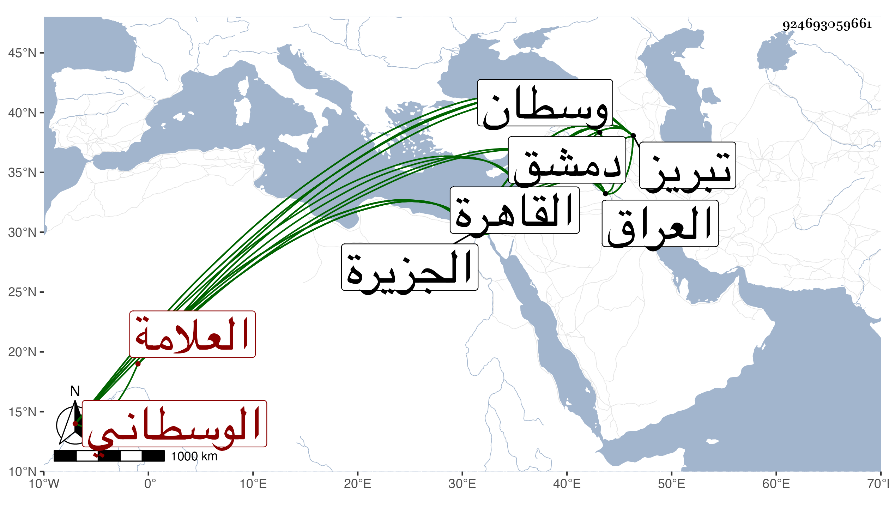

0902Sakhawi.DawLamic.ITO20230111-ara1.EIS1600.924693059661
Biography ID: 924693059661
608
حسين بن يوسف بن علي العلامة البدر بن العز بن العلاء الخلاطي الأصل الوسطاني نسبة لمدينة وسطان من مدائن العراق المشهور جده بأخي عبد الله . ولد في مدينة وسطان بعد سنة خمس وتسعين وسبعمائة وحفظ بها القرآن والحاوي والطوالع والكافية لابن الحاجب وتلخيص المفتاح وأخذ بها الفقه والحديث والنحو والصرف والمعاني والبيان عن الشيخ أحمد الكيلاني ، ثم رحل إلى تبريز فلازم الشريف ولي بن شرف الدين حسين بن أحمد الحسيني الاردبيلي حتى أخذ عنه الزهراوين من الكشاف وجميع العضد وحاشية الشيخ سعد الدين وغير ذلك من المعاني والبيان والأصول وقرأ عليه جميع شرح المطالع للقطب الرازي ، وكان يحكى أن مدينة تبريز ليس بها ذمي بل كل أهلها مسلمون لا يخلطهم غيرهم ، ثم رحل إلى الجزيرة فولى بها تدريس المجدية والسيفية وانتفع به أهلها ثم ولي قضاء الجزيرة ثم رحل في سنة ثلاث وأربعين إلى القاهرة فقرأ بها على شيخنا البخاري من نسخة كتبها من نسخة الشيخ عبد الرحمن الحلالي وهي كتبت من نسخة قرأت على مؤلفه وعليها خط الفربري ، ثم حج ورجع مع الركب الشامي ثم رجع إلى الجزيرة ثم رحل بأهله إلى دمشق سنة إحدى وخمسين فقطنها وانتفع به أهلها علما ودينا ثم رجع إلى القاهرة سنة سبع وخمسين قاصدا الحج وتوجه فيها مع الركب المصري فحج وتخلف إلى أن مات في ربيع الآخر سنة ثمان وخمسين رحمه الله ، وهو ممن لقيه البقاعي ووصفه بالشيخ الإمام العلامة وأبوه بالامام المفيد عز الدين وجده بالامام علاء الدين .
